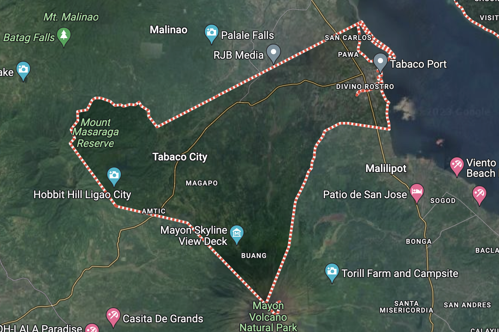

About Tabaco City
Welcome to Tabaco City, a place rich in history, culture, and natural beauty. Nestled in the heart of Albay, Philippines, Tabaco is known for its warm hospitality and vibrant community.
Founded in [year], Tabaco has grown into a thriving city with a unique blend of tradition and modernity. Explore the enchanting landscapes, historical landmarks, and cultural treasures that make Tabaco a destination like no other.
Our Vision
We envision Tabaco City as a center of excellence in education, trade and tourism in the Bicol Region with God-centered, healthy, and empowered people living in a world-class, well-designed, balanced and disaster-resilient environment, with a progressive and globally competitive economy led by gender sensitive and competent leaders committed to good governance and sustainable development.
Our Mission
It is our mission to ensure the promotion and development of healthy and progressive TABAQUEÑOS through wise utilization of, and equitable access to resources and opportunities, human resource development, shared in local governance, efficient and effective delivery of basic services and sustainable economic growth.
Key Features
- Rich Cultural Heritage
- Breathtaking Natural Landscapes
- Community Festivals and Events
- Local Cuisine and Culinary Delights
- Warm and Welcoming Community
Geographical Description
Tabaco is a seaside component city in Albay province. The city has a land area of 117.14 square kilometers or 45.23 square miles, accounting for 4.55% of the total area of Albay. According to the 2020 Census, its population was 140,961. This accounted for 10.25% of the entire population of Albay province, or 2.32% of the Bicol Region's total population. Based on these numbers, the population density is calculated to be 1,203 people per square kilometer or 3,117 people per square mile.
Whether you're a history enthusiast, a nature lover, or someone seeking a unique cultural experience, Tabaco City has something special to offer.